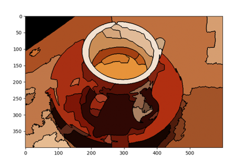

skimage.io#
Utilities to read and write images in various formats.
The following plug-ins are available:
Plugin |
Description |
pil |
Image reading via the Python Imaging Library |
imageio |
Image reading via the ImageIO Library |
tifffile |
Load and save TIFF and TIFF-based images using tifffile.py |
fits |
FITS image reading via PyFITS |
gdal |
Image reading via the GDAL Library (www.gdal.org) |
imread |
Image reading and writing via imread |
simpleitk |
Image reading and writing via SimpleITK |
matplotlib |
Display or save images using Matplotlib |
Find the appropriate plugin of 'kind' and execute it. |
|
Concatenate all images in the image collection into an array. |
|
List available plugins. |
|
Load an image from file. |
|
Load a collection of images. |
|
Save an image to file. |
|
Display an image. |
|
Display a collection of images. |
|
Read SIFT or SURF features from externally generated file. |
|
Read SIFT or SURF features from externally generated file. |
|
Return plugin meta-data. |
|
Return the currently preferred plugin order. |
|
Pop an image from the shared image stack. |
|
Push an image onto the shared image stack. |
|
Display pending images. |
|
Set the default plugin for a specified operation. |
|
Load and manage a collection of image files. |
|
A class containing all frames from multi-frame TIFF images. |
|
|
Data structures to hold collections of images, with optional caching. |
|
Handle image reading, writing and plotting plugins. |
|
|
|
- skimage.io.call_plugin(kind, *args, **kwargs)[source]#
Find the appropriate plugin of ‘kind’ and execute it.
- Parameters:
- kind{‘imshow’, ‘imsave’, ‘imread’, ‘imread_collection’}
Function to look up.
- pluginstr, optional
Plugin to load. Defaults to None, in which case the first matching plugin is used.
- *args, **kwargsarguments and keyword arguments
Passed to the plugin function.
- skimage.io.concatenate_images(ic)[source]#
Concatenate all images in the image collection into an array.
- Parameters:
- ican iterable of images
The images to be concatenated.
- Returns:
- array_catndarray
An array having one more dimension than the images in ic.
- Raises:
- ValueError
If images in ic don’t have identical shapes.
Notes
concatenate_imagesreceives any iterable object containing images, including ImageCollection and MultiImage, and returns a NumPy array.
- skimage.io.find_available_plugins(loaded=False)[source]#
List available plugins.
- Parameters:
- loadedbool
If True, show only those plugins currently loaded. By default, all plugins are shown.
- Returns:
- pdict
Dictionary with plugin names as keys and exposed functions as values.
- skimage.io.imread(fname, as_gray=False, plugin=None, **plugin_args)[source]#
Load an image from file.
- Parameters:
- fnamestr or pathlib.Path
Image file name, e.g.
test.jpgor URL.- as_graybool, optional
If True, convert color images to gray-scale (64-bit floats). Images that are already in gray-scale format are not converted.
- pluginstr, optional
Name of plugin to use. By default, the different plugins are tried (starting with imageio) until a suitable candidate is found. If not given and fname is a tiff file, the tifffile plugin will be used.
- Returns:
- img_arrayndarray
The different color bands/channels are stored in the third dimension, such that a gray-image is MxN, an RGB-image MxNx3 and an RGBA-image MxNx4.
- Other Parameters:
- plugin_argskeywords
Passed to the given plugin.
- skimage.io.imread_collection(load_pattern, conserve_memory=True, plugin=None, **plugin_args)[source]#
Load a collection of images.
- Parameters:
- load_patternstr or list
List of objects to load. These are usually filenames, but may vary depending on the currently active plugin. See
ImageCollectionfor the default behaviour of this parameter.- conserve_memorybool, optional
If True, never keep more than one in memory at a specific time. Otherwise, images will be cached once they are loaded.
- Returns:
- ic
ImageCollection Collection of images.
- ic
- Other Parameters:
- plugin_argskeywords
Passed to the given plugin.
- skimage.io.imsave(fname, arr, plugin=None, check_contrast=True, **plugin_args)[source]#
Save an image to file.
- Parameters:
- fnamestr or pathlib.Path
Target filename.
- arrndarray of shape (M,N) or (M,N,3) or (M,N,4)
Image data.
- pluginstr, optional
Name of plugin to use. By default, the different plugins are tried (starting with imageio) until a suitable candidate is found. If not given and fname is a tiff file, the tifffile plugin will be used.
- check_contrastbool, optional
Check for low contrast and print warning (default: True).
- Other Parameters:
- plugin_argskeywords
Passed to the given plugin.
Notes
When saving a JPEG, the compression ratio may be controlled using the
qualitykeyword argument which is an integer with values in [1, 100], where 1 is worst quality and smallest file size, and 100 is the best quality and largest file size (default 75). This is only available when using the PIL and imageio plugins.
- skimage.io.imshow(arr, plugin=None, **plugin_args)[source]#
Display an image.
- Parameters:
- arrndarray or str
Image data or name of image file.
- pluginstr
Name of plugin to use. By default, the different plugins are tried (starting with imageio) until a suitable candidate is found.
- Other Parameters:
- plugin_argskeywords
Passed to the given plugin.
Region adjacency graph (RAG) Merging
Region adjacency graph (RAG) Merging
- skimage.io.imshow_collection(ic, plugin=None, **plugin_args)[source]#
Display a collection of images.
- Parameters:
- ic
ImageCollection Collection to display.
- pluginstr
Name of plugin to use. By default, the different plugins are tried until a suitable candidate is found.
- ic
- Other Parameters:
- plugin_argskeywords
Passed to the given plugin.
- skimage.io.load_sift(f)[source]#
Read SIFT or SURF features from externally generated file.
This routine reads SIFT or SURF files generated by binary utilities from http://people.cs.ubc.ca/~lowe/keypoints/ and http://www.vision.ee.ethz.ch/~surf/.
This routine does not generate SIFT/SURF features from an image. These algorithms are patent encumbered. Please use
skimage.feature.CENSUREinstead.- Parameters:
- filelikestring or open file
Input file generated by the feature detectors from http://people.cs.ubc.ca/~lowe/keypoints/ or http://www.vision.ee.ethz.ch/~surf/ .
- mode{‘SIFT’, ‘SURF’}, optional
Kind of descriptor used to generate filelike.
- Returns:
- datarecord array with fields
- row: int
row position of feature
- column: int
column position of feature
- scale: float
feature scale
- orientation: float
feature orientation
- data: array
feature values
- skimage.io.load_surf(f)[source]#
Read SIFT or SURF features from externally generated file.
This routine reads SIFT or SURF files generated by binary utilities from http://people.cs.ubc.ca/~lowe/keypoints/ and http://www.vision.ee.ethz.ch/~surf/.
This routine does not generate SIFT/SURF features from an image. These algorithms are patent encumbered. Please use
skimage.feature.CENSUREinstead.- Parameters:
- filelikestring or open file
Input file generated by the feature detectors from http://people.cs.ubc.ca/~lowe/keypoints/ or http://www.vision.ee.ethz.ch/~surf/ .
- mode{‘SIFT’, ‘SURF’}, optional
Kind of descriptor used to generate filelike.
- Returns:
- datarecord array with fields
- row: int
row position of feature
- column: int
column position of feature
- scale: float
feature scale
- orientation: float
feature orientation
- data: array
feature values
- skimage.io.plugin_info(plugin)[source]#
Return plugin meta-data.
- Parameters:
- pluginstr
Name of plugin.
- Returns:
- mdict
Meta data as specified in plugin
.ini.
- skimage.io.plugin_order()[source]#
Return the currently preferred plugin order.
- Returns:
- pdict
Dictionary of preferred plugin order, with function name as key and plugins (in order of preference) as value.
- skimage.io.pop()[source]#
Pop an image from the shared image stack.
- Returns:
- imgndarray
Image popped from the stack.
- skimage.io.push(img)[source]#
Push an image onto the shared image stack.
- Parameters:
- imgndarray
Image to push.
- skimage.io.show()[source]#
Display pending images.
Launch the event loop of the current GUI plugin, and display all pending images, queued via
imshow. This is required when usingimshowfrom non-interactive scripts.A call to
showwill block execution of code until all windows have been closed.Examples
>>> import skimage.io as io >>> rng = np.random.default_rng() >>> for i in range(4): ... ax_im = io.imshow(rng.random((50, 50))) >>> io.show()

Region Boundary based Region adjacency graphs (RAGs)
Region Boundary based Region adjacency graphs (RAGs)Region adjacency graph (RAG) Merging
Region adjacency graph (RAG) Merging
- skimage.io.use_plugin(name, kind=None)[source]#
Set the default plugin for a specified operation. The plugin will be loaded if it hasn’t been already.
- Parameters:
- namestr
Name of plugin. See
skimage.io.available_pluginsfor a list of available plugins.- kind{‘imsave’, ‘imread’, ‘imshow’, ‘imread_collection’, ‘imshow_collection’}, optional
Set the plugin for this function. By default, the plugin is set for all functions.
Examples
To use Matplotlib as the default image reader, you would write:
>>> from skimage import io >>> io.use_plugin('matplotlib', 'imread')
To see a list of available plugins run
skimage.io.available_plugins. Note that this lists plugins that are defined, but the full list may not be usable if your system does not have the required libraries installed.
- class skimage.io.ImageCollection(load_pattern, conserve_memory=True, load_func=None, **load_func_kwargs)[source]#
Bases:
objectLoad and manage a collection of image files.
- Parameters:
- load_patternstr or list of str
Pattern string or list of strings to load. The filename path can be absolute or relative.
- conserve_memorybool, optional
If True,
skimage.io.ImageCollectiondoes not keep more than one in memory at a specific time. Otherwise, images will be cached once they are loaded.
- Other Parameters:
- load_funccallable
imreadby default. See Notes below.- **load_func_kwargsdict
Any other keyword arguments are passed to load_func.
Notes
Note that files are always returned in alphanumerical order. Also note that slicing returns a new
skimage.io.ImageCollection, not a view into the data.ImageCollection image loading can be customized through load_func. For an ImageCollection
ic,ic[5]callsload_func(load_pattern[5])to load that image.For example, here is an ImageCollection that, for each video provided, loads every second frame:
import imageio.v3 as iio3 import itertools def vidread_step(f, step): vid = iio3.imiter(f) return list(itertools.islice(vid, None, None, step) video_file = 'no_time_for_that_tiny.gif' ic = ImageCollection(video_file, load_func=vidread_step, step=2) ic # is an ImageCollection object of length 1 because 1 video is provided x = ic[0] x[5] # the 10th frame of the first video
Alternatively, if load_func is provided and load_pattern is a sequence, an
skimage.io.ImageCollectionof corresponding length will be created, and the individual images will be loaded by calling load_func with the matching element of the load_pattern as its first argument. In this case, the elements of the sequence do not need to be names of existing files (or strings at all). For example, to create anskimage.io.ImageCollectioncontaining 500 images from a video:class FrameReader: def __init__ (self, f): self.f = f def __call__ (self, index): return iio3.imread(self.f, index=index) ic = ImageCollection(range(500), load_func=FrameReader('movie.mp4')) ic # is an ImageCollection object of length 500
Another use of load_func would be to convert all images to
uint8:def imread_convert(f): return imread(f).astype(np.uint8) ic = ImageCollection('/tmp/*.png', load_func=imread_convert)
Examples
>>> import imageio.v3 as iio3 >>> import skimage.io as io
# Where your images are located >>> data_dir = os.path.join(os.path.dirname(__file__), ‘../data’)
>>> coll = io.ImageCollection(data_dir + '/chess*.png') >>> len(coll) 2 >>> coll[0].shape (200, 200)
>>> image_col = io.ImageCollection([f'{data_dir}/*.png', '{data_dir}/*.jpg'])
>>> class MultiReader: ... def __init__ (self, f): ... self.f = f ... def __call__ (self, index): ... return iio3.imread(self.f, index=index) ... >>> filename = data_dir + '/no_time_for_that_tiny.gif' >>> ic = io.ImageCollection(range(24), load_func=MultiReader(filename)) >>> len(image_col) 23 >>> isinstance(ic[0], np.ndarray) True
- Attributes:
- fileslist of str
If a pattern string is given for load_pattern, this attribute stores the expanded file list. Otherwise, this is equal to load_pattern.
- __init__(load_pattern, conserve_memory=True, load_func=None, **load_func_kwargs)[source]#
Load and manage a collection of images.
- concatenate()[source]#
Concatenate all images in the collection into an array.
- Returns:
- arnp.ndarray
An array having one more dimension than the images in self.
- Raises:
- ValueError
If images in the
skimage.io.ImageCollectiondo not have identical shapes.
See also
- property conserve_memory#
- property files#
- class skimage.io.MultiImage(filename, conserve_memory=True, dtype=None, **imread_kwargs)[source]#
Bases:
ImageCollectionA class containing all frames from multi-frame TIFF images.
- Parameters:
- load_patternstr or list of str
Pattern glob or filenames to load. The path can be absolute or relative.
- conserve_memorybool, optional
Whether to conserve memory by only caching the frames of a single image. Default is True.
Notes
MultiImagereturns a list of image-data arrays. In this regard, it is very similar toImageCollection, but the two differ in their treatment of multi-frame images.For a TIFF image containing N frames of size WxH,
MultiImagestores all frames of that image as a single element of shape (N, W, H) in the list.ImageCollectioninstead creates N elements of shape (W, H).For an animated GIF image,
MultiImagereads only the first frame, whileImageCollectionreads all frames by default.Examples
# Where your images are located >>> data_dir = os.path.join(os.path.dirname(__file__), ‘../data’)
>>> multipage_tiff = data_dir + '/multipage.tif' >>> multi_img = MultiImage(multipage_tiff) >>> len(multi_img) # multi_img contains one element 1 >>> multi_img[0].shape # this element is a two-frame image of shape: (2, 15, 10)
>>> image_col = ImageCollection(multipage_tiff) >>> len(image_col) # image_col contains two elements 2 >>> for frame in image_col: ... print(frame.shape) # each element is a frame of shape (15, 10) ... (15, 10) (15, 10)
- concatenate()[source]#
Concatenate all images in the collection into an array.
- Returns:
- arnp.ndarray
An array having one more dimension than the images in self.
- Raises:
- ValueError
If images in the
skimage.io.ImageCollectiondo not have identical shapes.
See also
- property conserve_memory#
- property filename#
- property files#